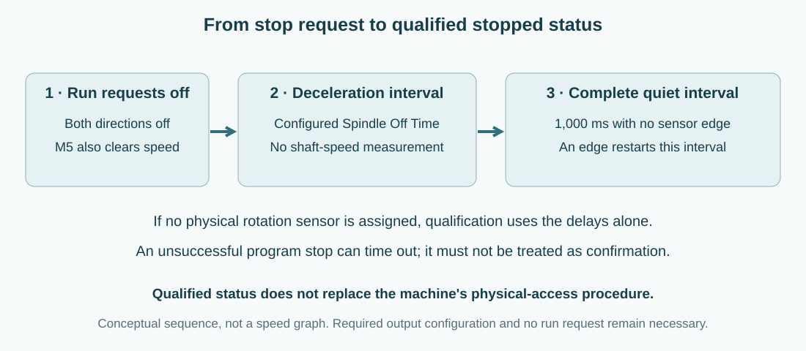

RADONIX · ROUTERXYZBC+TC · CHAPTER 10
Operator Manual · English · 8 October 2026
Spindle Operation
Understand what the spindle controls request, prepare the tool and machine, and distinguish an accepted command from actual rotation or standstill.
Expanded draft for review. Procedures describe the supplied application and machine-control routines. Use the approved tooling data and operating procedure for the installed machine.
10.1 Understand the spindle, its speed request and its actual movement
The spindle is the rotating assembly that holds and drives the cutting tool. The machine axes move that assembly around the workpiece; spindle rotation turns the cutter. These are related parts of machining, but they are controlled separately. A head that has stopped travelling can still contain a rotating cutter.
Spindle speed is expressed in RPM, meaning revolutions per minute. A request of 12,000 RPM asks for twelve thousand revolutions in one minute. It does not mean a feed distance, an axis speed or a percentage of the machining program. The appropriate speed depends on the approved tool, material and cutting process.
Three different things can be called “speed”
First there is the speed the job requires. Second there is the speed command sent by the application to the spindle equipment. Third there is the physical speed that the shaft has actually reached. During acceleration or deceleration, and during a fault, these can differ.
The main-window spindle RPM control represents the speed command. It reads the configured speed output and displays that value in RPM. It is not a separate shaft-speed measuring instrument. Seeing the requested number on the screen therefore confirms neither that the spindle has reached that speed nor that the cutting tool is rotating correctly.
| Item | What it means | What it does not establish |
|---|---|---|
| Spindle run control | The application's forward-run output request. | Measured shaft rotation, correct tool installation or attained RPM. |
| Spindle RPM control | The speed-output command displayed in revolutions per minute. | An independent measurement of the cutting tool's speed. |
| Axis or machining feed | How the machine moves along a travel or cutting path. | How fast the spindle rotates. |
| Spindle readiness | The applicable configured starting conditions are satisfied. | A measurement that the spindle has accelerated to cutting speed. |
| Qualified stopped status | The supplied control logic's stop conditions have been satisfied. | Permission by itself to touch the tool or enter the machine. |
Starting and setting speed are separate actions
A nonzero speed request does not by itself switch on the forward-run output. Conversely, a run request with a zero speed command is not a useful substitute for an approved cutting-speed setting. Before starting manually, check both the requested RPM and the intended run state.
Throughout this chapter, request describes what the controls ask the machine to do. Observe and verify describe the operator's checks of the result. Keep that distinction when reporting a problem: “the RPM control showed 12,000” is different from “an approved speed measurement confirmed 12,000 RPM.”
Review the machine access procedure before spindle work. Ordinary operation, a software stop and maintenance isolation are different activities. This chapter explains the controls; it does not replace the installed machine's procedure for securing the tool and isolating hazardous energy.
10.2 Locate the controls and understand when they are available
Find the Spindle toggle in the main-window spindle area. Beside it is the vertical spindle-speed slider. The same area also contains the tool selector and Measure Tool control. Those nearby controls perform different operations; selecting a tool or measuring its length is not a spindle start command.
The Spindle toggle turns green when either mapped run output is active, including during program-controlled reverse rotation. The green face shows a run request. Actual rotation and standstill are checked separately.
FIGURE 10-1 · MAIN-WINDOW SCREENSHOT REQUIRED
Spindle toggle and RPM slider
Insert an English main-window crop showing Spindle, the complete vertical speed slider with its displayed value, the tool selector and Measure Tool. Annotate the toggle as “Spindle run request” and the speed value as “Commanded RPM — not measured shaft speed.” Identify the tool controls separately.
Suggested image: assets/images/10-spindle-controls.png. Capture an approved stationary setup and state whether it is Simulation or Normal operation. Do not stage a live spindle start merely to obtain the image.
Availability follows the operation currently in progress
Manual on/off control and speed adjustment have different availability rules. While a machining program is active, the application prevents manual use of the Spindle toggle, but ordinarily permits adjustment of the RPM command. This avoids treating manual start/stop and speed adjustment as interchangeable actions.
| Machine/application state | Manual forward on/off | RPM adjustment |
|---|---|---|
| Connected and idle, with the required mapped outputs and access | Available, subject to the machine's interlocks. | Available. |
| Ordinary manual jog in progress | Jog alone does not disable it. | Jog alone does not disable it. |
| Main machining program active | Blocked. | Normally available unless another blocking operation is active. |
| Program loading or a connection transition | Blocked. | Blocked. |
| Homing, managed positioning or a tool operation | Blocked. | Blocked. |
| Disconnected or the relevant physical output is unavailable | Unavailable. | Unavailable. |
Operator access is also required. Applying machine-control program changes can introduce additional restrictions, including blocking RPM adjustment. A control becoming available again does not automatically mean that the physical setup is ready for a start.
Do not use availability as an instruction
The ability to operate a control during ordinary jog means only that jog does not impose that particular software restriction. It does not advise starting a tool while moving close to material. Plan spindle operation and axis movement as separate, deliberate steps under the approved procedure.
If the toggle is disabled during a machining operation, do not look for a live output editor to bypass it. Follow the prescribed program interruption and spindle-stop procedure. If there is immediate danger, use the machine's emergency response rather than trying to regain access to a greyed-out control.
After any rejected or suppressed start, read the available report and examine the actual run and speed indications. The machine interlocks may clear an unsuitable run request after it is issued. A brief change on the screen is not a successful start.
10.3 Prepare the tool, machine and intended operation before starting
Before starting the spindle, establish why it is being started and what operation will follow. A manual check, a prepared cutting job and a tool exchange are different activities. The application cannot decide that a physically fitted cutter, holder or fixture is suitable just because the requested RPM is within its numerical range.
Use the approved setup sheet and tool information for the job. Identify the actual fitted tool and its holder, and complete the machine's clamping and inspection procedure. If the tool identity shown on the screen disagrees with the fitted tool, resolve that disagreement before rotation. Do not try a brief start to find out whether the tool is secure.
| Check | Operator action |
|---|---|
| Tool and holder | Confirm the approved assembly, its condition, correct installation and retention through the installed procedure. |
| Requested speed | Use the approved RPM for this tool and operation, within the permitted limits of the complete assembly. |
| Direction | Confirm the required rotation direction and that the machine supports it. |
| Work area | Complete the prescribed guarding, clearance and access checks. Remove setup equipment through the approved procedure before starting. |
| Machine supplies and indications | Resolve relevant pressure, thermal, drive-ready and tool-grip conditions. Do not dismiss an unexpected indication. |
| Current activity | Know whether you are starting manually or starting a program that controls the spindle itself. |
| Stopping response | Know the ordinary interruption procedure and the emergency response from the operating position. |
What the supplied readiness checks cover
The supplied machine-control logic checks the emergency circuit state and the configured forward run output. It also checks pressure, spindle thermal condition, drive readiness, tool-clamped, tool-released and piston-retracted signals where those inputs are assigned to enabled physical sensors. The tool-release output must not be active, and a tool operation must not be underway.
These checks describe the configured signals, not a complete inspection of the machine. A “tool clamped” signal cannot identify the cutting tool or certify that its cutting edges are undamaged. A “drive ready” signal is not a measurement of attained spindle speed. Continue to perform the physical and job checks required by the machine documentation.
Optional sensors need a careful interpretation
Some installations do not include every optional sensor. In the supplied logic, an absent optional physical input is treated differently from an assigned sensor reporting the wrong state. For example, an assigned pressure signal that does not indicate the required condition prevents the applicable operation; it is not silently treated as a machine without that sensor.
Do not disable a sensor mapping, substitute a fixed value or alter an interlock to obtain a start. Configuration describes the installed equipment and belongs to authorized setup work. An unexpected sensor state during ordinary operation needs investigation.
Once the checks are complete, remain at the operating position. Do not leave the controls after issuing a start request on the assumption that the machine will either start correctly or refuse all unsuitable conditions. Observe the result and follow the established response if it differs from the expected behaviour.
10.4 Set the requested RPM deliberately
Choose the requested RPM from the approved job information. Do not select a speed by copying another machine, using the slider's midpoint or assuming that the largest permitted number is the best cutting speed. The spindle, holder, cutter and cutting process each impose requirements.
The setting MaximumSpindleSpeed defines the full-scale RPM used by the control system. It also sets the upper end of the main-window speed control. This is a machine configuration value, not an operator recommendation. Changing it changes the relationship between displayed RPM and the command sent to the equipment; it is not a way to obtain a little more speed for one job.
Use the slider as a live command
The vertical slider changes its value as it is operated. It is not a draft entry awaiting an OK button. Dragging the handle can publish successive speed changes while the pointer moves. Clicking elsewhere on the track can select that position directly.
- Read the required RPM and the current displayed value.
Confirm that you are using the spindle-speed control, not the machining-feed or jog control.
- Confirm that adjustment is appropriate now.
Before a manual start, prepare the value with the run request off. During machining, make only the adjustment authorized by the operating procedure.
- Move the slider deliberately.
Use a controlled adjustment and watch the number. Avoid clicking an arbitrary place on the track merely to give it focus.
- Release the control and verify the settled indication.
Check that the displayed command is the intended value. The machine-control program can also write this output.
- Observe the process through the approved method.
The new command does not establish that the spindle has already reached the new speed.
| Interaction | Effect in the supplied control |
|---|---|
| Drag the handle | Changes the value during the drag. |
| Click the track away from the handle | Can directly select a different value at that location. |
| Arrow keys while the slider has focus | Adjust by the configured small increment. |
| Page Up / Page Down | Adjust by the configured larger increment. |
| Home / End while the slider has focus | Select the minimum or maximum. These keys do not home the machine in this context. |
| Mouse wheel while focused and editable | Changes the value in small increments. |
| Escape or loss of focus during a gesture | Ends the interaction; it does not undo a speed value already published. |
The manual increment comes from Router → Spindle → Spindle Speed Step (100 RPM by default). Page Up and Page Down use ten increments. The slider displays the executed S setpoint within the configured range without rounding it to a manual increment.
A manual change does not rewrite the machining file
The slider and S commands share the speed setpoint. When an executed S command changes the setpoint, the slider follows it within the configured limits, including after a manual adjustment. The last setpoint remains in effect through M3, M4 and M5 and is saved as Router → Spindle → Current Spindle Speed. Restoring the value on connection does not issue a run command.
Do not use a zero RPM command as a substitute for a spindle-stop request. The run output and the qualified stopped condition are separate. Equally, lowering the spindle RPM does not stop the machine axes or reduce the programmed feed automatically.
10.5 Start the spindle manually and verify its response
Manual starting is appropriate only when the machine's approved procedure calls for it and the manual control is available. It is not a replacement for the spindle commands in a prepared machining program. For ordinary program execution, use the job-start procedure and let the verified program sequence control the required spindle actions.
The main Spindle toggle directly changes the forward-run output request. It does not execute the supplied M3 routine and therefore does not perform M3's programmed minimum start wait. Do not interpret the toggle changing state as a message that an acceleration period has completed.
- Complete the pre-start checks.
Confirm the actual tool, retention, intended direction, approved speed, clear work area and required machine conditions.
- Confirm that the intended operation is manual forward running.
If a program, tool operation or positioning sequence is active, follow that operation's procedure rather than trying to force the manual control.
- Check the current RPM request with the run request off.
Set and read back the approved value. Do not assume the last job left a suitable speed.
- Operate Spindle once to request forward running.
Keep clear and stay at the operating position. The accepted request may be suppressed by a machine interlock if conditions are unsuitable.
- Observe the response through the approved method.
Check the run indication, any report and the actual machine response. Follow the installation's method for allowing acceleration and confirming readiness for the intended operation.
- Proceed only when the result is consistent with the approved task.
Do not start cutting solely because the RPM command is already displayed.
| Observation | Interpretation | Operator response |
|---|---|---|
| The run indication turns on and the expected response begins | The forward request is active; actual acceleration still takes time. | Observe and complete the prescribed start verification. |
| The indication turns off again or the spindle does not begin the expected response | The request may have been suppressed, unavailable or unable to produce the expected physical result. | Read the state and report; investigate before another request. |
| The displayed RPM differs from the intended setting | The current speed command is not what you expected. | Resolve the command value before proceeding. |
| Unexpected noise, vibration, direction or tool behaviour | The physical response is unsuitable even if no software warning appears. | Use the prescribed stopping or emergency response and obtain assistance. |
The toggle is not a held-to-run control
After a manual run request is accepted, releasing the mouse button does not request spindle stop. The toggle represents an on/off command state. Keep this separate from a held jog button, where release normally ends the manual movement request.
Similarly, changing focus, opening a different view or looking at the report is not a spindle-stop action. Establish the intended run state explicitly and verify its result. Do not leave a running spindle unattended because the control interaction has ended.
If the machine refuses a start, do not repeatedly click until the indication stays on. A condition such as pressure or grip feedback can change between attempts, allowing an unexpected later start. Leave the request in a known state, identify the cause and deliberately repeat the complete preparation only when it has been resolved.
10.6 Stop manual running and distinguish it from a motion stop
For an ordinary manual forward-running operation, use the available Spindle toggle to remove the forward-run request. Continue observing until the spindle has stopped according to the approved machine procedure. A command changing to off does not make the rotating assembly stop instantaneously.
The toggle writes the forward output only. It does not run the M5 sequence, does not necessarily clear the speed-output value and does not serve as a general reverse-stop control. This distinction is especially important if an installation supports reverse running through a program.
- Identify what is currently controlling the spindle.
For manual forward running with the toggle available, use that control. For program-controlled running, follow the job interruption procedure.
- Request the prescribed ordinary stop.
For the manual forward case, switch Spindle off once. For immediate danger, use the installed emergency response.
- Observe deceleration from the operating position.
Keep clear during rundown. An off indication or a zero command does not prove that the shaft is stationary.
- Confirm the final state through the approved method.
Account for the tool, spindle and any other equipment relevant to access.
- Apply the access or isolation procedure for the next task.
Inspection from outside, unloading and hands-on tool work can require different precautions.
| Action | What it requests | Limit of that action |
|---|---|---|
| Manual Spindle toggle off | Removes the forward-run output request. | Does not itself execute the program's timed stop routine or certify standstill. |
| Set RPM to zero | Changes the speed-output command. | Does not remove the run output or satisfy the supplied stopped qualification by itself. |
| Pause or Reset motion | Stops axes and motion paths through the application's motion-stop route. | Is not, by itself, an M5 spindle-stop request. |
| M5 in a program | Clears the forward and reverse commands, then waits for the supplied stop conditions. | Still requires the machine's physical-access procedure afterward. |
| Parking completion | Indicates the positioning route has completed. | Does not establish spindle shutdown. |
A motion stop can leave the spindle running
Pause and Reset request all-motion stop and then queue their editable PLC extensions. Factory extensions clear spindle run/direction without timers and preserve the analog speed setpoint. They do not execute M5's timed stop-qualification sequence. Pause preserves the TP0 cursor; Reset rewinds it after stopping. Saved engineer PLC extensions can differ from factory defaults. Factory Run does not restart the spindle automatically; verify equipment state before resuming.
For example, pausing during a cut can stop travel while the tool continues to rotate. Remain clear and follow the approved procedure for the interrupted job. Do not reach toward the tool because the position readings have stopped changing.
The speed value may remain after manual switch-off
Because the manual toggle changes the forward request separately, the RPM command may still show the previously selected value after switching off. That is not proof of continued physical rotation. It also means a later manual on request may use an existing speed value. Read and confirm the value before every new start.
If the expected stop response does not occur, use the machine's prescribed escalation or emergency procedure. Do not attempt to stop the shaft by contact, tool release or improvised changes to outputs. Record the discrepancy only after the machine has been brought into the required safe condition.
10.7 Recognize spindle instructions in a machining program
A machining file can contain spindle instructions among its movement instructions. An operator should recognize their purpose when checking the file and interpreting a pause in execution. This does not require writing a program or editing the machine-control routines.
The letter S introduces a spindle-speed request in RPM. M3 requests forward running, M4 requests reverse running where supported, and M5 requests spindle stop. Their supplied behaviour is described below; an approved customized installation must document any differences.
| Instruction | Supplied behaviour | Operator interpretation |
|---|---|---|
| S followed by a number | Stores the requested speed and writes the speed output, limited to the configured range. | Sets speed; does not by itself issue a direction/run request. |
| M3 | Requests forward, clears reverse and waits the configured minimum start delay while ready. | Expect forward starting and a deliberate wait before command completion. |
| M4 | Requests reverse, clears forward, only when reverse is configured and readiness is satisfied. | Do not assume this machine supports reverse because a file contains M4. |
| M5 | Clears both run directions, then waits for the supplied stop qualification. | Expect rundown and a stop wait; the retained S request is not erased. |
| M2 | Uses the supplied spindle-stop and wait sequence associated with program termination. | Program ending includes the spindle-stop contract. |
| M30 | Uses M2, waits for successful completion and completion of its source path, then resets that path. | Do not treat it as an immediate reset that skips the spindle-stop wait. |
Speed output during a stop
S writes the normalized speed setpoint to the assigned AM or inverter speed output. M3 and M4 select the run direction. M5 clears both run requests and leaves the speed setpoint at its current value.
A manual RPM adjustment changes the same output as S. Check its current value before restarting.
Read program progress together with the machine state
A spindle instruction can intentionally hold program progression while its start or stop conditions are being processed. A moment without axis movement is not necessarily a frozen application. Check the active operation and messages before pressing Run again or issuing unrelated commands.
If a spindle instruction reports failure, treat that result as an interrupted job requiring assessment. Do not skip the instruction to reach the next cutting movement. A start failure can mean the tool is not permitted to rotate; a stop failure can mean the required stopped qualification has not been obtained.
Before starting from a selected line or recovering after an interruption, use the approved program-start procedure. Do not assume that manually choosing a visible line recreates the correct retained speed, tool and run state. Later chapters cover those recovery decisions; this chapter explains the spindle consequences you need to recognize.
10.8 Understand the start delay and the limits of reverse operation
The supplied M3 and M4 routines include a minimum starting delay. This gives the spindle a configured interval after the run request before the instruction completes. The setting is Router → Spindle → Spindle On Time and its unit is milliseconds: 1,000 milliseconds equals one second.
The supplied initial value is 3,000 milliseconds, or three seconds. This describes the default setting in the reviewed source, not a guaranteed acceleration time or a recommended value for every spindle. The commissioned machine must have an approved setting suitable for its equipment and process.
The delay does not measure RPM
While the start routine is active, it requires the spindle readiness conditions to remain satisfied and runs the configured start timer. If readiness fails, it clears the run requests, requests stopping of the main machining path and reports an unsuccessful result.
Successful completion means that the command's required delay elapsed while its readiness condition remained satisfied. The routine does not compare a measured shaft RPM against the requested RPM. It therefore cannot, by itself, prove that a particular cutter reached cutting speed in the available time.
| Observation or setting | Meaning | Do not conclude |
|---|---|---|
| Spindle On Time | The minimum delay used by the supplied program start routines. | That the same delay runs when the manual toggle is used. |
| A successful M3/M4 result | The configured delay completed while the required start conditions were satisfied. | That an independent speed measurement confirmed the requested RPM. |
| Drive ready indication | The applicable drive-readiness condition is satisfied. | That the physical shaft is already at speed. |
| A configured rotation sensor | Provides state changes used in stopped qualification. | That this chapter's RPM readout is a tachometer. |
| A readiness failure during starting | The supplied routine removes spindle requests and stops the main path. | That skipping the wait is an acceptable recovery. |
Reverse is an installation capability
M4 is recognized as a reverse-start request, but recognition does not mean the installed spindle can perform it. Reverse must be configured and supported by the complete spindle/drive arrangement. Tooling and the intended process must also permit that direction.
The reviewed EtherCAT inverter-speed route does not provide a reverse command capability. Assigning an additional reverse digital output does not add reverse support to that route. On an installation using it, an M4 request fails the supplied reverse-capability check.
The main Spindle toggle controls forward running. It is not a direction selector. Do not attempt to obtain reverse by using a negative RPM, repeatedly toggling forward or changing output mappings. Have a job that requires unsupported reverse operation reviewed before machining.
On an installation legitimately configured for reverse, follow its documented direction-change sequence. This chapter does not authorize reversing a rotating spindle directly. Confirm the approved stop and restart conditions, and remember that a forward toggle in the off state is not proof that reverse operation has stopped.
Changes to start timing or direction capability belong to authorized machine setup. Record the observed problem and current settings so that the responsible person can assess them; the operator's task is to recognize the meaning of the wait and its limits.
10.9 Understand rundown, stopped qualification and timeout
Removing a run command starts a stopping process; it does not establish instant standstill. The supplied control logic allows a configured deceleration interval, then requires an additional quiet interval before it sets its stopped status. This distinction explains why a program can wait after the visible run requests have gone off.
The deceleration setting is Router → Spindle → Spindle Off Time, expressed in milliseconds. After that interval, the supplied logic requires a complete additional 1,000 milliseconds without an edge from the assigned rotation sensor. An edge is a change from low to high or from high to low.

How the rotation sensor is used
If a physical rotation sensor is assigned, each detected change restarts the quiet interval. Both a continuously high signal and a continuously low signal count as having no edge. The logic therefore watches changes; it does not interpret one static level as a universal “stopped” signal.
If no physical rotation sensor is assigned, the stopped qualification uses the deceleration and quiet delays alone. Do not describe that arrangement as sensor-confirmed standstill. Even where a sensor is fitted, the status depends on the configured signal behaving correctly and must be used within the approved machine procedure.
| Condition | Effect | Operator interpretation |
|---|---|---|
| Both run requests removed, required outputs configured | The stopped qualification can progress through its timing conditions. | Rundown can still be in progress. |
| Spindle Off Time has not elapsed | The initial deceleration interval is not complete. | A continuing wait can be normal. |
| A rotation-sensor edge occurs during the quiet check | The complete quiet interval must be established again. | The stop wait may take longer. |
| No physical rotation sensor assigned | Qualification relies on timing alone. | Do not infer an independent physical measurement. |
| Either run request becomes active | The no-run condition for stopped qualification is lost. | Investigate the operation and current commands. |
| The program's stop timeout is reached | The stop routine reports failure and requests main-path stop. | The required qualification was not obtained; do not continue as though it succeeded. |
Minimum delay and maximum wait are different
For M5 and M2, the supplied timeout threshold is the configured Spindle Off Time plus the one-second quiet interval plus SpindleFeedbackTimeout. The latter is an additional allowance for obtaining the required stop result, not a second normal acceleration setting.
The timing is state-dependent. If the spindle was already off and its stopped condition already qualified before M5 began, the background quiet check need not start from scratch at that instruction. M5 still applies its own minimum stop delay. Do not assume every stop instruction must last exactly the same duration.
Tool exchange uses this information too
The supplied tool-exchange sequence requests spindle shutdown and waits for its own stop confirmation together with the stopped status. A tool operation waiting for this condition is not an invitation to release the tool manually. Let the approved sequence complete or follow its fault recovery procedure.
If a stop times out, preserve the message and determine whether the problem involves continued rotation, sensor behaviour, output configuration or another machine condition. Changing the delay or disabling the sensor simply to remove the timeout can hide the cause. Access to the tool must still follow the installed procedure.
10.10 Respond to a refused start, lost readiness or an incomplete stop
When a spindle operation fails, first identify the stage: the manual control was unavailable, a start request was removed, a program start failed, running was interrupted, or a stop did not qualify. “The spindle does not work” is too broad to choose a reliable recovery action.
Establish the required stopped condition before investigating from close to the machine. If the actual response is dangerous or inconsistent with the stop request, use the installed emergency procedure. Screen inspection comes after the immediate machine condition is addressed.
| Symptom | Possible explanation to check | Operator response |
|---|---|---|
| Spindle toggle is disabled | Program activity, loading, homing, positioning, tool operation, connection or access restrictions. | Identify the active operation. Do not bypass the control through an output editor. |
| A manual on request disappears | The configured readiness conditions do not permit running. | Read available messages and check the relevant approved indications before retrying. |
| RPM is displayed but rotation is absent | Speed command exists without a run request, a suppressed request or a drive/machine problem. | Distinguish the command from physical response; do not assume the RPM number is measured. |
| RPM changes back after a manual adjustment | A later program instruction changed the speed command. | Check the job sequence and retained program request. |
| M4 is unsuccessful | Reverse capability is unavailable or another readiness condition failed. | Confirm that the job is compatible with the installed spindle arrangement. |
| M5 or M2 does not finish successfully | The required stop qualification was not obtained within the permitted time. | Preserve the report and have rundown, sensor state and configuration assessed. |
| Running stops after a pressure, thermal or grip-related change | A configured interlock may have removed the run request. | Resolve the underlying machine condition and assess the interrupted job. |
| The head has stopped but the cutter continues rotating | A motion stop is not necessarily a spindle-stop request. | Keep clear and follow the spindle interruption procedure. |
Read a result number with its operation name
For the supplied M3 and M4 routines, result 0 means the minimum start delay completed while the required conditions were satisfied; result 2 means readiness, or reverse capability for M4, was unavailable. For supplied M5 and M2, result 0 means the stop qualification succeeded and result 3 means the stop wait timed out.
Those meanings belong to those routines. A number from a tool-exchange routine or another operation can have a different context. Record the operation name, result and accompanying exit reason together. An aborted routine is not a successful operation merely because a previous successful result remains visible elsewhere.
Readiness is monitored beyond the first click
The supplied background logic continues to monitor spindle conditions. An unsuitable running request, conflicting direction requests or unsupported reverse can cause it to clear the run outputs and request stopping of the main machining path. During a tool exchange, that operation has its own fault and stopping sequence.
This explains why a spindle that initially started can later stop following a change in a configured condition. Restoring a pressure signal or clearing a warning does not by itself revalidate the interrupted workpiece, tool and program state. Use the recovery procedure before restarting.
FIGURE 10-3 · DIAGNOSTIC SCREENSHOT REQUIRED
Spindle request and relevant feedback
Insert an approved English diagnostic view or a labelled pair of views showing the current spindle run/speed requests, relevant configured input states, and a genuine report message where available. Label command outputs separately from sensor feedback. Explain which shown inputs are actually fitted on this machine.
Suggested image: assets/images/10-spindle-diagnostics.png. Use recorded evidence or a stationary approved demonstration. Do not force a sensor or create a spindle fault to obtain the illustration.
Information to record for assistance
Record whether the operation was manual or program-controlled, the requested RPM, the tool fitted, the instruction or stage in progress, and what the spindle physically did. Include the report with its time and any relevant pressure, thermal, drive-ready or grip indication. State whether Pause, Reset, emergency action or reconnection occurred.
Do not change maximum RPM, timing, sensor assignments or machine-control programs merely to remove a symptom. If the cause cannot be established using the approved operator checks, leave the operation stopped and refer it to the responsible person.
10.11 Work through common operating situations
The following examples connect the controls to situations an operator may encounter. They are reading exercises using imaginary approved setups. Their RPM values are not recommendations for any actual cutter, and the command sequences are explanations rather than complete machining files.
Example one: prepare a manual forward run
The setup sheet calls for a manual spindle check at an approved 12,000 RPM. The operator has completed the physical setup and the machine is connected, idle and ready. The speed control presently shows a value left from an earlier operation.
The operator first confirms the forward request is off, sets the approved RPM and reads the displayed command. The operator then uses Spindle once and observes the actual response from the operating position. There is no automatic M3 start-delay completion attached to that manual click, so the installation's manual verification procedure determines when the check is complete.
At the end, the operator requests forward off and observes rundown before applying the required access procedure. A retained 12,000 RPM command afterward is not proof that the shaft is still rotating, and it must be checked again before the next start.
Example two: adjust a running job
A prepared job has requested 12,000 RPM through S and started forward through M3. The operator is authorized by the job procedure to change the current output to 10,000 RPM. The speed slider is available while the program is active, although the manual on/off toggle is blocked.
After the adjustment to 10,000 RPM, M5 stops the spindle and M3 requests forward running again. The speed output remains at 10,000 RPM through both commands.
| Event | Current speed-output command | Last S instruction | Run consequence |
|---|---|---|---|
| S requests 12,000 RPM | 12,000 RPM. | 12,000 RPM. | Does not alone switch on a run direction. |
| M3 executes successfully | 12,000 RPM. | 12,000 RPM. | Forward requested; start delay applies. |
| Authorized slider adjustment | 10,000 RPM. | 12,000 RPM. | Existing run request is separate. |
| M5 executes | 10,000 RPM. | 12,000 RPM. | Both directions cleared; stop qualification awaited. |
| A later M3 executes successfully | 10,000 RPM. | 12,000 RPM. | Forward requested again; start delay applies. |
Example three: the program waits at its spindle stop
The run outputs have been cleared, but the program has not yet advanced beyond its stop instruction. If the deceleration and quiet intervals are still being satisfied, this can be expected. A configured rotation-sensor edge during the quiet interval restarts that interval.
The operator remains clear and checks the current operation and messages. If the stop routine reports a timeout, the operator does not treat the wait as completed or advance past it. The machine's stopped condition and the cause of the failed qualification need assessment.
Example four: cutting finishes and parking begins
Automatic parking is enabled for an approved job. The operator expects the head to move again after the application accepts normal program completion. As explained in Chapter 9, that parking request does not itself stop the spindle or check its rotation.
Spindle shutdown must therefore be provided by the verified job sequence and the installed operating procedure. If the job contains the supplied stop/end sequence, interpret its result together with the parking result. A head at the parking point, by itself, does not establish that the cutter is stationary or that unloading is permitted.
In each example, the operator follows the same reasoning: identify the current command, understand what it can change, observe the result, and check the conditions for the next activity. This is more reliable than memorizing a button sequence without knowing what the program can do afterward.
10.12 Review the operating decisions before working independently
Before using the spindle independently, practise explaining the controls and the expected machine response to the person responsible for your training. Knowing where a button is located is only the first step. You should also be able to explain what the button changes, what it does not confirm and how the next program instruction can change the state again.
| Before this activity | Be able to explain |
|---|---|
| Manual start | The actual tool, approved RPM, forward direction, pre-start checks and method of verifying the response. |
| Manual stop | Which run request the toggle removes, the expected rundown and the access checks that follow. |
| Speed adjustment | That the slider is live, which value you intend to set, and whether later program instructions can replace it. |
| Program start or continuation | The required spindle state, the meaning of the start wait and the job's approved recovery procedure. |
| End of a job | The spindle-stop sequence, possible parking movement and final conditions required for unloading. |
| A refused or incomplete operation | The stage that failed, the exact report and which approved checks can be made without changing configuration. |
Questions to check your understanding
- The RPM slider shows 18,000. Does that prove the spindle is rotating at 18,000 RPM?
No. It shows the current speed command in RPM. Actual rotation and attained speed require the machine's approved verification method.
- Is the upper end of the RPM slider a recommendation for the fitted cutter?
No. It comes from machine full-scale configuration. The permitted speed for the tool assembly and job must be obtained from approved setup information.
- Can you prepare a nonzero speed while the forward request is off?
Yes, when adjustment is available. The speed command and run request are separate. Recheck both before starting.
- Does releasing the mouse after clicking Spindle stop the spindle?
No. The toggle is an on/off request, not a held-to-run control.
- Does pressing Escape during a slider adjustment restore the original speed?
No. It ends the interaction without undoing values already published. Read the resulting command and follow the appropriate operating procedure.
- Why can the slider remain available while the manual toggle is disabled?
During an active machining program, the application ordinarily allows speed adjustment but blocks manual spindle on/off.
- What does successful completion of M3 confirm?
That its configured minimum start delay completed while the required readiness conditions remained satisfied. It does not independently measure shaft RPM.
- Does M5 forget the program's selected speed?
No. It clears the run outputs and leaves the current speed setpoint in effect.
- What does a rotation-sensor edge do during the quiet interval?
It restarts that interval. Where no physical rotation sensor is assigned, the stopped qualification relies on timing alone.
- Can a motion stop or completed parking move establish spindle standstill?
No. Treat axis movement, spindle shutdown and permission to access the machine as separate checks.
What belongs in the installation's own instructions
The machine's instructions must supply the approved tool/holder limits, normal operating speeds, direction capability, commissioning values and method of confirming rotation and standstill. They must also describe the actual guards, stop devices, energy-isolation procedure and fitted sensors. Those physical details cannot be determined from the application controls alone.
If authorized personnel have customized the saved machine-control routines, use instructions that match those installed routines. The supplied defaults are not silently substituted for saved custom behaviour. Report a difference between this chapter and the installed machine so the documentation can be reconciled before relying on the affected procedure.